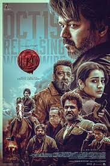
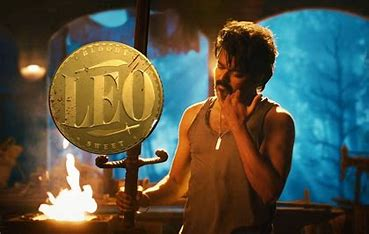

Parthiban Parthi is an animal rescuer and a café owner in Theog, Himachal Pradesh living with his wife, Sathya, son Siddharth "Siddhu" and daughter Mathi "Chintu". One day, Parthi's friend, Joshy Andrews, a forest ranger, calls him to help tame a spotted hyena threatening the townsfolk.
With Siddhu's help, Parthi manages to tranquilise the hyena. He purposely avoids public attention over this incident and adopts the hyena after it calms down.
One night, Parthi and Chintu are at the café when Shanmugham, a robber, and his men arrive to rob it. Parthi tries to appease them by giving them money, but one of the gang members makes a move on his employee Shruthi.
Enraged, Parthi beats up all of them. When one of them attempts to kill Chintu, Parthi guns all of them down without hesitation, but later has an emotional breakdown. Initially arrested, Parthi is released for having committed the murders in self-defense, but his photograph appears in newspapers all over India. One such image is seen by notorious gangster Harold Das in Telangana, who informs his elder brother, Antony Das about him. Antony immediately leaves with his men for Theog.
Meanwhile, Shanmugham's relatives attempt to kill Parthi and his family, prompting him to request a high-ranking, armed police officer from Tamil Nadu to be sent to his house for protection. Parthi's request is granted as Napoleon, having been promoted recently following his heroics with Dilli in Tiruchirappalli,[a] is assigned to protect his family.
On meeting Parthi, Antony insists that Parthi is his son, Leo Das, who was presumed to be dead, but Parthi vehemently denies this. Antony threatens him to accept his identity and surrender or face the consequences. Antony meets Sathya and tells her that Leo is a mass murderer, prompting her to dig into Parthi's past.
At the same time, Joshy starts digging into Leo's past and learns about his friend, Hridayaraj D'Souza, who was arrested and is to be hanged in three days. On meeting with Hridayaraj, Joshy learns about Leo's past.
In 1999, Antony established a tobacco factory called Das & Co. Harold returned to India from Canada and started manufacturing and smuggling datura, a drug significantly more lethal than cocaine, using the factory as a front as their tobacco products did not take off.
Antony's twin children, Leo and Elisa Das, did the dirty work for them to run the business smoothly. Being a strong believer in the occult, Antony tried to sacrifice Elisa based on his astrologer's advice, as this would have allowed their tobacco products to take off.
Enraged, Leo sets fire to all of Harold's drugs, but Harold manages to kill Elisa and Antony shoots Leo, who was since presumed to be dead.
"BLOODY SWEET"

On hearing this, Joshy is convinced that Parthi is not Leo, while Sathya also gets definitive proof of the same.
Meanwhile, Antony kidnaps Siddhu and tells him that he will sacrifice Siddhu as he could not sacrifice Elisa with his own hands. Parthi and Napoleon give chase to Antony and his men, and Parthi eventually catches up with them. He finishes off Antony and his men but does not find Siddhu.
Harold learns about Antony's death and calls Parthi to bring Antony's body in return for Siddhu. As Parthi goes to Harold's lair, Harold reveals that he has sent men to kill Sathya and Chintu. However, Napoleon, Joshy, and the hyena finish off all the men. Harold's men attack Parthi at their lair, but he manages to fend them off. As Harold and Parthi engage in a fistfight, Parthi grabs a gun and holds Harold at gunpoint.
At this point, Harold gets convinced that Parthi is not Leo and states that he and his family can walk away freely. However, Parthi starts laughing and finally admits that he is Leo before gunning down Harold, rescuing Siddhu and torching the entire Das & Co.
factory. Leo states that he has done nothing good in his past and anyone who insists on knowing his story must either die or already be dead, thus revealing that he had told Antony the truth about his identity before killing him.
In an epilogue, as peace returns to Parthi's life, he gets a phone call. The caller reveals that he knows Parthi is Leo and tells him that destroying only his family's datura factory was not enough to make the society drug-free as drugs are rampant all over India.
The caller also says that he knows Parthi recognises his identity,[b] as Parthi sighs in exasperation.